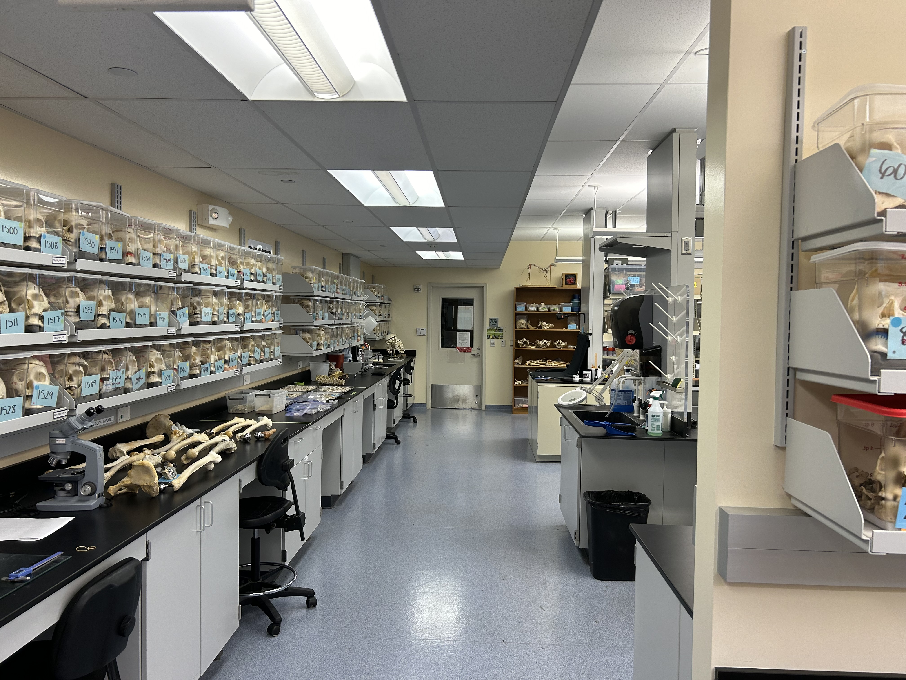

D. Cusimano Research Methods
About
This site is exists to reflect the development of the Methods being proposed for capturing Geometric Morphometric data by using 3D Photogrammetry and digital landmarking software. The navigation bar above links to the different components of this project.
All current research is being produced at the John A. Burns School of Medicine (JABSOM) at the University of Hawai’i, Manoa in Kaka’ako, Honolulu. All work done and published through JABSOM is done in accordance with the school’s protocols and done with the express permission and supervision of JABSOM faculty. All of the human remains used for this research have come from the `Willed Body Program’ and are thus donated for use in research and education.
The Lab
My work is performed in the Biosciences Building in the lab of Dr. Scott Lozanoff. In addition to Dr. Lozanoff, I am overseen and assisted by Dr. Bob Mann, Steven Labrash, and Jesse Thompson. This work would not be possible without their patience and assistance.
